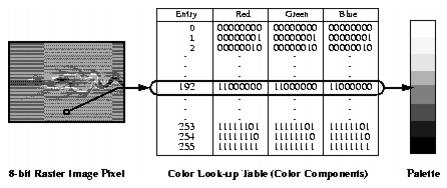

HDF User’s Guide
Version 4.2r4[Top] [Prev][Next]
|
|
HDF User’s GuideVersion 4.2r4 |
[Top] [Prev][Next] |
Chapter 9 -- Palettes (DFP API)
9.1 Chapter Overview
This chapter describes the routines available for storing and retrieving 8-bit palettes. An 8-bit palette is a look-up table with 256 entries, one entry for each of the 256 possible pixel values the system hardware associates with a particular color. This chapter introduces and describes the HDF palette data model and the DFP interface.
9.2 The Palette Data Model
A palette is the means by which color is applied to an image and is also referred to as a color lookup table. It is a table in which every row contains the numerical representation of a particular color. Palettes can be many different sizes, but HDF only supports palettes with 256 colors, corresponding to the 256 different possible pixel values (0 to 255) in 8-bit raster images.
For each of the 256 colors in a palette, there are three 8-bit numbers describing its appearance. (See Figure 9a.) Each 8-bit color component represents the amount of red (or "R"), green (or "G"), or blue (or "B") used to create a particular color. In HDF, 8-bit palettes are assumed to be organized as follows; each entry consists of three bytes: one each for R, G, and B value. The first group of three bytes represent the R, G, and B values of the first color in the palette; the next three the R, G, and B values of the second color; and so forth. Therefore, the 256 possible different pixel values in an image serve as an index for the 256 color entries stored in the palette.
FIGURE 9a Color Mapping Using a PaletteIn the HDF library, there are four interfaces that support the reading and writing of palette data; the raster image interfaces, covered in Chapter 6, 8-Bit Raster Images (DFR8 API), Chapter 7, 24-bit Raster Images (DF24 API), Chapter 9, Palettes (DFP API), and the DFP palette interface covered in this chapter. The raster image interfaces store palettes with raster images and the palette interface reads and writes palettes outside of raster image sets. Palettes stored using the palette interface are stored as isolated data objects. In other words they are not included as members of any set, although they can be grouped with other objects using the Vgroup interface. For more information on the Vgroup interface, refer to Chapter 5, Vgroups (V API).
9.3 The Palette API
The DFP interface consists of eight routines. The routines DFPaddpal and DFPgetpal are the primary routines for palette I/O and are used for most reading and writing operations.
9.3.1 Palette Library Routines
All C functions in the palette interface are prefaced by "DFP" and the equivalent FORTRAN-77 functions are prefaced by "dp". These routines are divided into the following categories:
The DFP function calls are more explicitly defined in the following table and in the HDF Reference Guide.
TABLE 9A DFP Library Routines9.4 Writing Palettes
9.4.1 Writing a Palette: DFPaddpal and DFPputpal
To write a palette to an HDF file, the calling program must contain one of the following function calls:
DFPaddpal and DFPputpal will write a palette to an HDF file named by filename. When given a new filename, DFPputpal and DFPaddpal creates a new file and writes the palette as the first object in the file. When given an existing filename, DFPaddpal appends the palette to the end of the file.
DFPputpal provides this functionality as well with additional options for how the data is handled, providing more control over how a palette is written to file than DFPaddpal. Specifically, the overwrite parameter determines whether or not to overwrite the last palette written to a file or to append a new palette onto the file. The filemode parameter determines whether to create a new file or to append the data to the previous file. Note the combination to overwrite a palette in a newly created file is invalid and will generate an error. To overwrite a palette, filename must be the same filename as the last file accessed through the DFP interface. The parameters for DFPaddpal and DFPputpal are more explicitly defined in the following table.
TABLE 9B DFPputpal and DFPaddpal Parameter ListCalling DFPaddpal or DFPputpal immediately after writing an 8-bit raster image will not group the palette with the preceding image. Palettes written to a file sequentially can be retrieved sequentially. However, to maintain a higher level of organization between multiple palettes and images stored in the same file, it's a good idea to explicitly group each palette with the image to which it belongs. To find out more about assigning a palette to an image, see Chapter 6, 8-Bit Raster Images (DFR8 API).
EXAMPLE 1. Writing a PaletteIn the following code examples, DFPaddpal is used to write a palette to an HDF file named "Example1.hdf".
C:#include "hdf.h" main( ) { uint8 palette_data[768]; intn i; int32 status; /* Initialize the palette to grayscale. */ for (i = 0; i < 256; i++) { palette_data[i * 3] = i; palette_data[i * 3 + 1] = i; palette_data[i * 3 + 2] = i; } /* Write the palette to file. */ status = DFPaddpal("Example1.hdf", (VOIDP)palette_data); }FORTRAN:PROGRAM WRITE PALETTE integer dpapal, status, i character palette_data(768) C Initialize the palette to greyscale. do 10, i = 1, 256 palette_data((i - 1) * 3 + 1) = char(i - 1) palette_data((i - 1) * 3 + 2) = char(i - 1) palette_data((i - 1) * 3 + 3) = char(i - 1) 10 continue C Write the palette to the HDF file. status = dpapal('Example1.hdf', palette_data) end9.4.2 Specifying the Reference Number of a Palette: DFPwriteref
DFPwriteref specifies the reference number of the palette to be written on the next call to DFPaddpal or DFPputpal:
DFPwriteref assigns the specified reference number to the next palette written to the file filename. If the value of ref is the same as the reference number of an existing palette, the existing palette will be overwritten.
The parameters of DFPwriteref are further described in the following table.
TABLE 9C DFPwriteref Parameter List9.5 Reading a Palette
The DFP programming model for reading a palette is similar to that for writing a palette - only the palette read call is required.
9.5.1 Reading a Palette: DFPgetpal
DFPgetpal is the only function required to read a palette. If the file is being opened for the first time, DFPgetpal returns the first palette in the file. Subsequent calls will return successive palettes in the file. In this way palettes are read in the same order in which they were written to the file.
To read a palette from an HDF file, the calling program must contain the following routines:
DFPgetpal retrieves the next palette from the HDF file specified by filename. The space allocated for the palette is specified by palette and must be at least 768 bytes. When DFPgetpal is first called, it returns the first palette in the file. Subsequent calls to DFPgetpal will return successive palettes in the order in which they are stored in the file, including those stored via the DFR8 interface.
The parameters of DFPgetpal are defined in the following table.
TABLE 9D DFPgetpal Parameter ListEXAMPLE 2. Reading a PaletteThe following examples demonstrate the method used to read a palette from the "Example1.hdf" HDF file created in Example 1.
C:#include "hdf.h" main( ) { uint8 palette_data[768]; intn status; /* Read the palette data from a file. */ status = DFPgetpal("Example1.hdf", (VOIDP)palette_data); }FORTRAN:PROGRAM READ PALETTE integer dpgpal, status character palette_data(768) C Read the palette from the HDF file. status = dpgpal('Example1.hdf', palette_data) end9.5.2 Reading a Palette with a Given Reference Number: DFPreadref
DFPreadref is used to access specific palettes stored in files containing multiple palettes. It is the optionally called before DFPgetpal to set the next palette to be accessed to be the specified palette. DFPreadref can be used in connection with vgroups, which identify their members by tag/reference number pair.
To access a specific palette, use the following calling sequence:
DFPreadref specifies the reference number for the next read operation performed on the HDF file filename to the reference number specified by ref.
The parameters of DFPreadref are further defined in the following table.
TABLE 9E DFPreadref Parameter List9.5.3 Specifying the Next Palette to be Accessed to be the First Palette: DFPrestart
DFPrestart causes the next DFPgetpal to read from the first palette in the file, rather than the palette following the one that was most recently read. DFPrestart has the following syntax:
9.6 Other Palette Routines
9.6.1 Querying the Number of Palettes in a File: DFPnpals
DFPnpals returns the total number palettes in a file and has the following syntax:
The parameter of DFPnpals is further defined in the following table.
TABLE 9F DFPnpals Parameter List
9.6.2 Obtaining the Reference Number of the Most Recently Accessed Palette: DFPlastref
DFPlastref returns the reference number most recently used in writing or reading a palette. This routine is used for attaching annotations to palettes and adding palettes to vgroups.
The following calling sequence uses DFPlastref to find the reference number of the palette most recently written to an HDF file:
DFPputpal or DFPgetpal can be used in place of DFPaddpal with similar results.
9.7 Backward Compatibility Issues
As HDF has evolved, a variety of internal structures have been used to store palettes, with different tags used to represent them. To maintain backward compatibility with older versions of HDF, the palette interface supported by HDF version 4.0 recognizes palettes stored using all previously-used HDF tags. A detailed description of the tags and structures used to store palettes is in the HDF Specifications and Developer's Guide v3.2 which can be found from the HDF web site at http://www.hdfgroup.org/.
|
HDF4.2r4 - February 2009 Copyright |
The HDF Group www.hdfgroup.org |